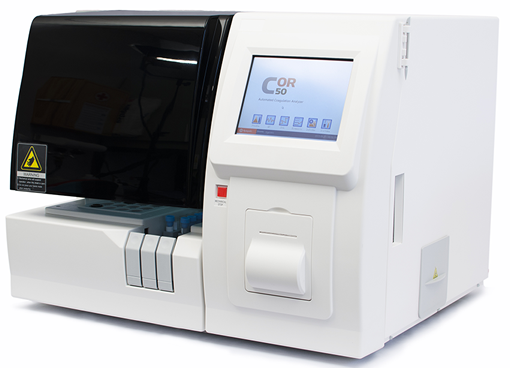

Wiener LAB COR 50
Coagulómetro automatizado, 60 test/hora para TP

GENERALIDADES: El COR 50 es un coagulómetro totalmente automático, 60 test/hora para TP.
Con espacio suficiente para 20 reactivos diferentes y 3 posiciones más para diluyentes y solución limpiadora.
Capacidad para 27 muestras en 3 gradillas de 9 posiciones cada una.
Especificaciones técnicas:
Funcionamiento del sistema:
Rendimiento: 60 test/h para TP/40 test/h para TP y APTT.
Parámetros: TP, APTT, TT, FIB (Fibrinógeno), ATIII, Dímero D, etc.
Métodos de medición:
• Coagulométrico: método de dispersión de luz.
• Cromogénico: método colorimétrico, 405 nm.
• Inmunológico: método turbidimétrico, 575 nm.
Memoria: 10,000 resultados y 10,000 curvas de reacción.
Control de calidad: 12 archivos de control de calidad. 10 tests por archivo. 30 curvas. 12 meses de guardado.
Calibración: hasta 6 puntos. 10 ítems.
Tipo: automático, random access.
Muestras urgentes: Sí.
Auto dilución y/o re-test de muestra: Sí.
Lector de códigos de barras: Sí (opcional).
Interfase: Bidireccional.
Registro: 0214E2017 SSA
DATOS COMPLEMENTARIOS: Para información adicional comunicarse a:
WIENER LAB.
REPRESENTACIONES LABIN MÉXICO, S.A. de C.V.
Teléfonos: (55) 5524-0771, 5200-2500
Lada sin costo: 01 800-581-4616
e-mail: contacto@wiener-mex.com
www.wiener-lab.com.ar